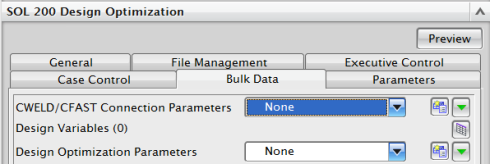

SOL 200参数 – 模型数据选项卡
可以使用设计优化参数来控制收敛以及频率或优化输出的详细程度。
例如，可以在解算方案对话框的模型数据选项卡中定义这些参数，这些参数是随 DOPTPRM 模型输入指派的。
-
DESPCH – 求解器向 Nastran .pch 文件中写入设计变量和改进的设计变量输出的频率
-
IPRINT – .f06 文件中报告的有关设计循环的详细程度。此参数控制优化器的诊断输出量
-
P1 – 求解器向 .f06 文件中写入设计循环输出的频率
-
P2 – 求解器向 .f06 文件中写入设计循环输出的详细程度
